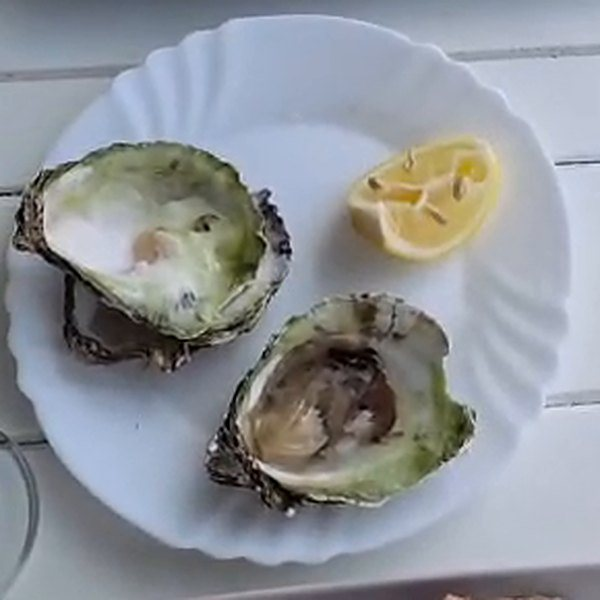
Kamenice, pola porcije
6 kom · Svježe sa naše farme
21.00 €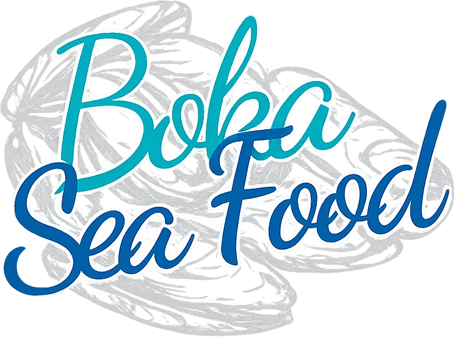
Risan · Perast · Bokokotorski zaliv
Mušlje i kamenice iz čistog mora Boke, izvađene svakog jutra i poslužene na korak od mjesta gdje rastu.
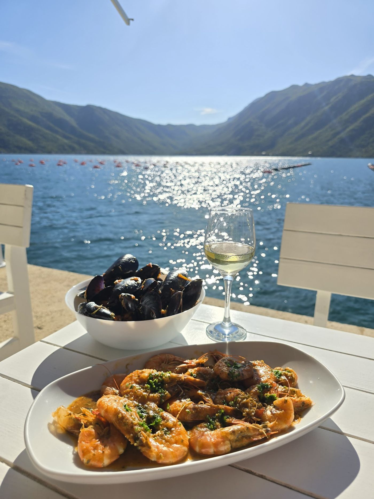
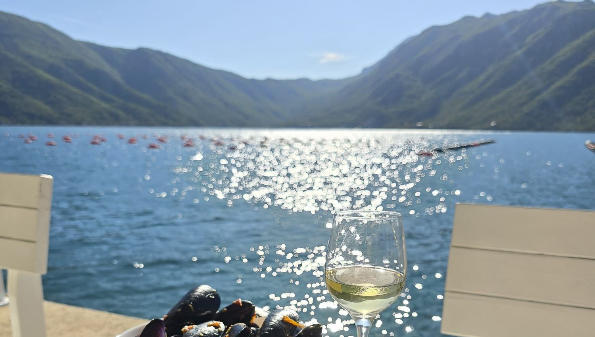
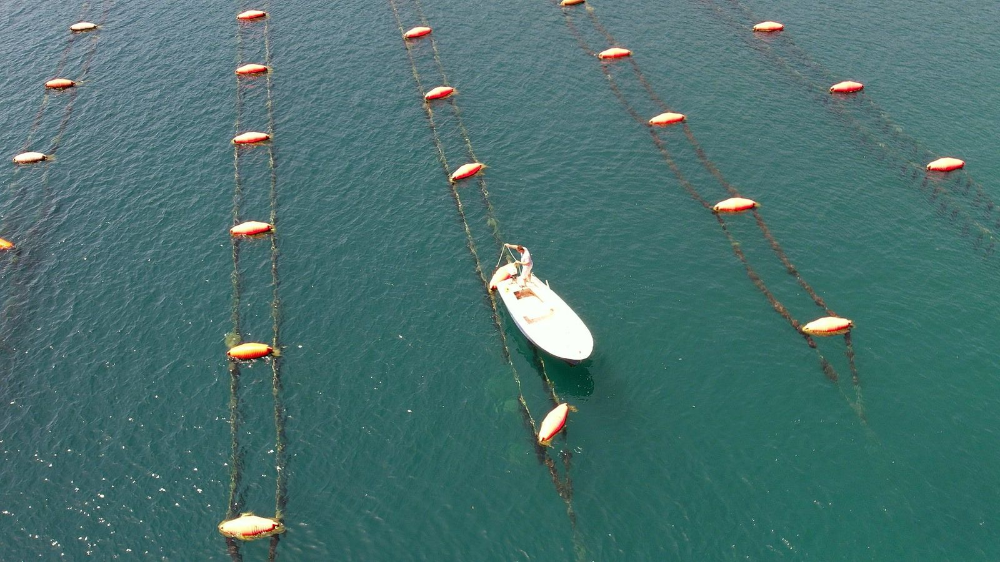


Naša farma iz vazduha
Ovdje rastu naše mušlje i kamenice: na dugim konopima u čistom, mirnom moru između Risna i Perasta, nekoliko minuta od vašeg stola.

Naša priča
Boka Seafood nije počeo u kuhinji, već na moru. Mušlje i kamenice uzgajamo na konopima u Bokokotorskom zalivu, gdje se hladni planinski izvori miješaju s morem i daju našim školjkama čist, blago slatkast ukus.
Restoran je došao kasnije, da bi ih i naši gosti probali onako kako ih mi jedemo: pravo iz mora, jednostavno spremljene, uz čašu našeg domaćeg vina i pogled na cijelu Boku.
Izbor
naših omiljenih jela

6 kom · Svježe sa naše farme
21.00 €
1 kg · Kuvane, u bijelom sosu
14.00 €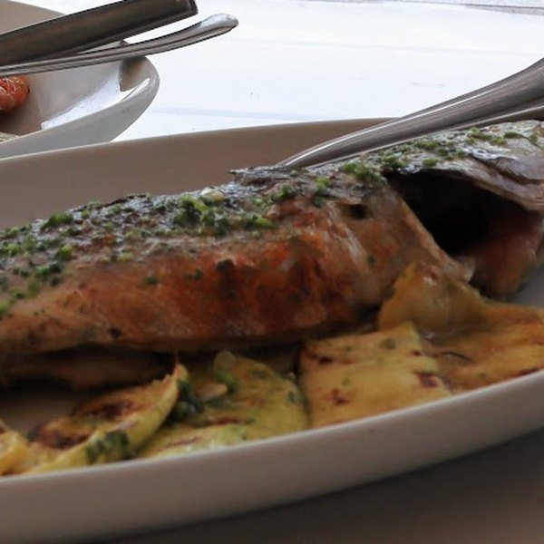
350–400 g · Cijela riba, sa grila
20.00 €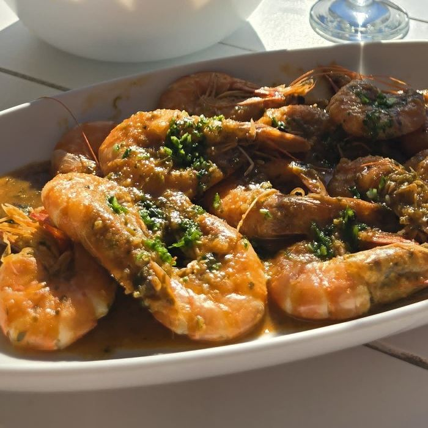
10 kom · Sa grila
17.00 €
300 g · Odrezak, sa grila
22.00 €Sa naše trpeze
Ovako izgleda ručak kod nas: riba i gambori sa grila, kamenice sa naše farme i čaša domaćeg vina, na korak od mora.
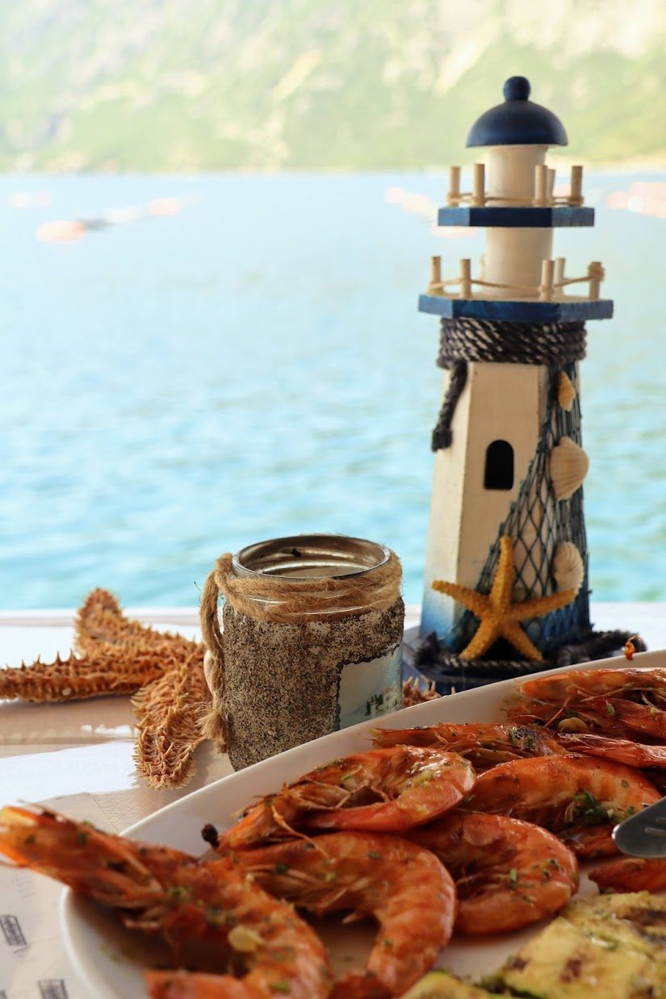
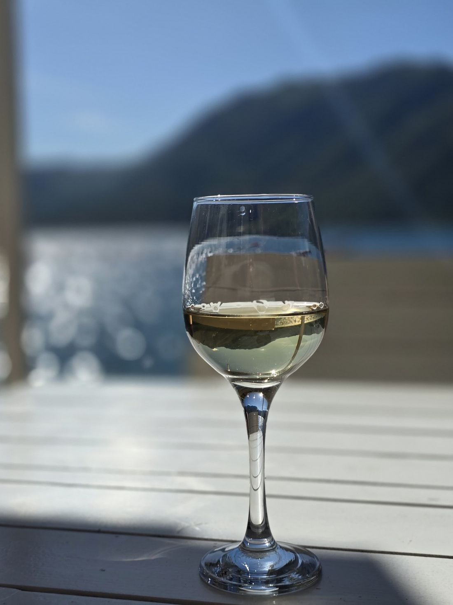

Porodični doživljaj
Upoznajte najmlađeg kapetana u Boki! Naš brat Dražen ima deset godina, svoju malu barku i neizmjernu ljubav prema našoj farmi. Kada je more mirno i bistro, povešće vas do farme da izbliza vidite redove mušlji i kamenica ispod površine. Usput će vam ispričati sve što zna o školjkama, ponekad po knjizi, a ponekad u svojoj, Draženovoj verziji. Najstručnije predavanje u Boki ne obećavamo, ali najsimpatičnije garantujemo.
Mala barka, dva putnika i jedan vrlo ozbiljan kapetan.
Kad je more bistro, konopi sa školjkama vide se kao na dlanu.
Sve što zna o mušljama i kamenicama, i svaki put ponešto novo.
Po povratku probajte školjke koje ste upravo vidjeli kako rastu.
U Draženovu kasicu štedi za veću barku · najviše 2 osobe · na upit
Kapetan Dražen isplovljava samo kad je more mirno i bistro, i kad završi domaći zadatak. Na moru je uvijek i neko od nas, tu u blizini. Javite nam se dan ranije!

Dodirnite fotografiju da je uvećate.
Utisci gostiju
„Najsvježije mušlje koje smo ikad jeli, a farmu vidite sa stola. Poštene cijene za ovakav kvalitet.”
— Gost, Velika Britanija
„Sto na samoj obali, a ispred nas farma mušlji. Kamenice su bile najljepši dio našeg putovanja po Crnoj Gori.”
— Gost, Njemačka
„Jednostavna, poštena hrana na prelijepom mjestu. Kilogram mušlji i čaša njihovog domaćeg Chardonnay-a. Savršeno.”
— Gost, Srbija
Javite nam se
Javite nam kada želite da nam dođete, a mi ćemo provjeriti ima li slobodnog stola uz more. Odgovaramo preko WhatsApp-a, obično za nekoliko minuta. Za grupe veće od 12 osoba, slobodno nas pozovite.
Gdje smo
Magistralni put između Risna i Perasta, Bokokotorski zaliv, Crna Gora
Dvadesetak minuta vožnje od Starog grada Kotora, magistralom uz more, odmah poslije Perasta.
| April – oktobar | Svakog dana 12:00 – 23:00 |
|---|---|
| Novembar – mart | Pet – ned 12:00 – 21:00 |
| Vožnja s kapetanom Draženom | Na upit, po lijepom vremenu |
| Plaćanje | Samo gotovina |
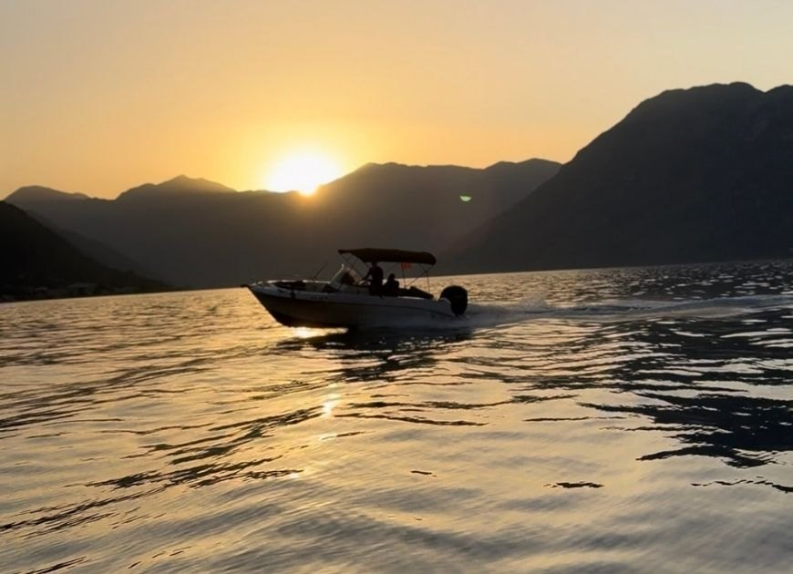
Preporučujemo
Sea Rush Tours
Poslije ručka kod nas, nastavite dan na moru! Sea Rush Tours vozi privatne i grupne ture gliserom do Gospe od Škrpjela, Perasta i Plave pećine, uz kupanje u najljepšim uvalama Boke. Gosti ih na TripAdvisoru ocjenjuju sa 4,9.
Privatne tureGrupne ture★ 4.9 TripAdvisor
 Gospa od Škrpjela
Gospa od Škrpjela Perast
Perast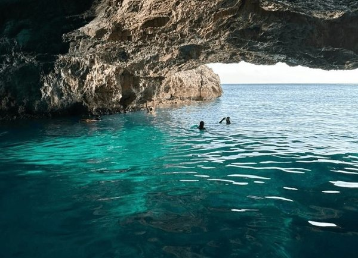
Plava pećina